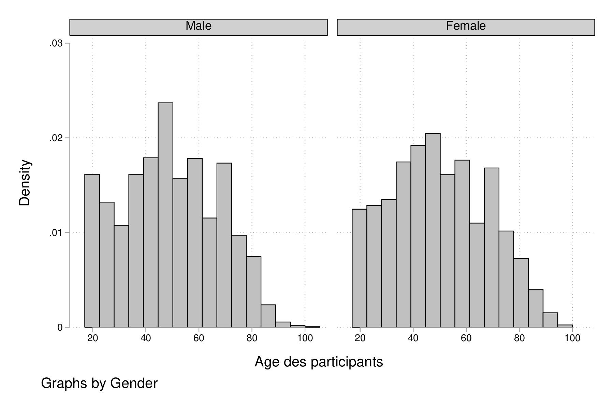
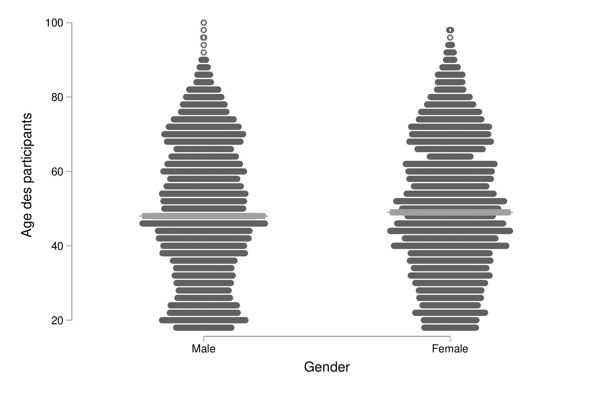
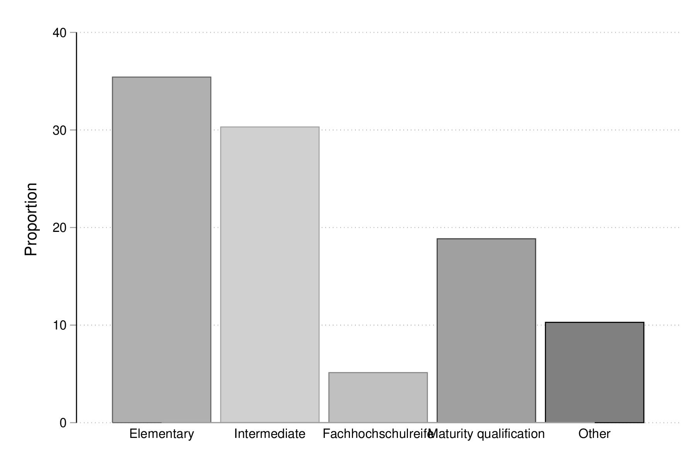

Stata : fonctionnalités graphiques
Table des matières
Stata dispose d’un excellent système graphique avec de nombreuses options de personnalisation. La référence reste l’ouvrage de Mitchell, actuellement dans sa 3e édition [5]. D’autres ouvrages sont disponibles, comme par exemple celui de Nick Cox [3]. Mais il est également recommendé de consulter le site de support de Stata qui offre un panorama des différents types de graphique avec un accès interactif à chacun des cas de figure.
Les commandes graphiques peuvent être utilisées pour décrire des données ou en tant que commandes de « post estimation » (par exemple, analyse en composantes principales, graphique de résidus).
Introduction
Les données qui serviront de base à la plupart des illustrations de ce chapitre portent sur une enquête socio-économique allemande réalisée en 2009 et décrite dans l’ouvrage de Kohler & Kreuter [4]. Les avriables d’intérêt sont les suivantes : ybirth (année de naissance), hhnr2009 (foyer résidentiel), sex (sexe), mar (statut marital), edu (niveau d’éducation), yedu (nombre d’années de formation), voc (niveau secondaire ou université), emp (type d’emploi), egp (catégorie socio professionnelle), income (revenus, en €), size (taille du logement), hhsize (nombre de personnes dans habitation).
set scheme plotplain // translator set gph2eps fontface "Droid Sans" // Stata 13 does not know how to deal with Graph2pdf from a terminal... // Switching to EPS like in the 80s use data/gsoep09 describe, short describe, simple
set more off set scheme plotplain use data/gsoep09 (SOEP 2009 (Kohler/Kreuter)) describe, short Contains data from data/gsoep09.dta obs: 5,411 SOEP 2009 (Kohler/Kreuter) vars: 65 13 Feb 2012 17:08 size: 568,155 Sorted by: persnr describe, simple persnr income rooms eqplif pic wor10 hhnr2009 hhinc renttype eqpnrj lsat wor11 state hhsize rent hhtyp wor01 wor12 ybirth hhsize0to14 reval area1 wor02 sample sex rel2head eqphea area2 wor03 intnr mar ymove eqpter dvisits wor04 hhnr edu ybuild eqpbas heval wor05 strata yedu condit eqpgar hsat wor06 psu voc dsat eqpalm polint wor07 dweight emp size eqpsol pia wor08 xweights egp seval eqpair pib wor09
Voici un aperçu des données sous forme de listing des premières observations :
list persnr-sex in 1/5
list persnr-sex in 1/5
+-------------------------------------------------------+
| persnr hhnr2009 state ybirth sex |
|-------------------------------------------------------|
1. | 8501 85 N-Rhein-Westfa. 1932 Male |
2. | 8502 85 N-Rhein-Westfa. 1939 Female |
3. | 15001 150 N-Rhein-Westfa. 1946 Male |
4. | 15002 150 N-Rhein-Westfa. 1953 Female |
5. | 18201 111373 Mecklenburg-V. 1969 Male |
+-------------------------------------------------------+
Graphiques univariés de base
Fonction de répartition et fractiles
Considérons l’âge des répondants qui peut être reconstruit à partir de l’année de naissance (ybirth) et de l’année de réalisation de l’enquête (2009) :
generate age = 2009 - ybirth summarize age
generate age = 2009 - ybirth
summarize age
Variable | Obs Mean Std. Dev. Min Max
-------------+--------------------------------------------------------
age | 5411 49.50712 18.12642 17 100
Bien entendu, l’option details de summarize apporte beaucoup plus d’information concernant la distribution de la variable, notamment du point de vue des fractiles :
summarize age, details
summarize age, details option details not allowed r(198);
Pour se représenter ces chiffres sous forme graphique, il est possible d’afficher la fonction de répartition empirique des données, \(F_X(x)\), définie comme \(F_X(x) = P(X \le x)\) pour une variable aléatoire \(X\), ce qui permet d’évaluer visuellement quelle proportion des données se situe en-deça d’une certaine valeur \(x\). Il est également possible de jauger de la quantité d’observations contenues dans un intervalle (puisque \(P(a < X \le b) = F_X(b) - F_X(a)\)), surtout si l’on s’aide visuellement en superposant des lignes horizontales au points d’ordonnée \(a\) et \(b\).
Dans un premier temps, examinons la courbe des quantiles produite par la commande quantile. Il s’agit de représenter la distribution jointe des valeurs ordonnées de la variable d’intérêt en fonction des quantiles d’une loi uniforme :
quantile age graph export "fig-02-quantile-age.eps", replace

Figure 1 : Distribution des fractiles d’âge
Pour la fonction de répartition, si l’on ne souhaite pas passer par des packages additionnels (p.ex., cdfplot), le plus simple consiste à calculer directement à calculer la fonction de répartition empirique à l’aide de cumul. Il s’agit en réalité de la fonction réciproque de celle présentée plus haut. Dans l’exemple ci-après, on affiche cette variable auxiliaire en fonction de l’âge et on surligne le premier et le troisième quartile par des lignes horizontales :
cumul age, gen(agecum) sort agecum graph twoway line agecum age, ytitle(F(x)) yline(.25 .75, lwidth(thin)) graph export "fig-02-cumul-age.eps", replace
Figure 2 : Fonction de répartition empirique de l’âge
Un graphique tout aussi intéressant consiste à afficher les fractiles d’une variable en fonction des fractiles d’une loi normale, ce que l’on appelle communément un diagramme de type quantile-quantile. L’examen de la forme de la courbe permet d’évaluer rapidement si les données sont compartibles avec l’hypothèse selon laquelle elles se distribuent « à peu près normalement ».
qnorm age, grid graph export "fig-02-qnorm-age.eps", replace
Figure 3 : Diagramme quantile-quantile pour l’âge
Histogrammes et courbes de densité
Pour construire un histogramme de cette même variable (age), on utilisera la commande histogram, en précisant l’option freq si l’on souhaite afficher les effectifs (« fréquences » en anglais) plutôt que la densité :
histogram age, xtitle("Age des participants")
graph export "fig-02-histogram-age.eps", replace

Figure 4 : Distribution de l’âge des répondants
Notons que cette commande dispose de l’option by() des commandes twoway de sorte qu’il est assez simple de tracer des histogrammes conditionnés sur les valeurs prise par une autre variable, comme illustré ci-après.
label variable age "Age des participants" histogram age, bin(15) by(sex) graph export "fig-02-histogram-age-sex.eps", replace

Figure 5 : Distribution de l’âge des répondants selon le sexe
Rappelons que la fonction de densité, \(f_X\), et la fonction de répartition, \(F_X(x)\), discutée plus haut sont liées par une relation simple. Dans le cas continu, \(F_X(x) = \int_{-\infty}^x f_X(t)\, \mathrm{d}t\).
kdensity age, normal bw(5) lwidth(0.8) graph export "fig-02-kdensity-age.eps", replace
Figure 6 : Distribution de l’âge des répondants
Notons qu’une alternative aux histogrammes consiste à utiliser un diagramme en points à l’aide de dotplot. Dans ce cas, chaque point représente une observation (idéal pour les petits échantillons), mais cette commande se prête mieux aux cas où l’on souhaite 2 ou plusieurs distributions, grâce à son option over(). Voici une illustration, avec un petit échantillon aléatoire de la base de données (la commande gsample doit être installée au préalable) :
preserve gsample 5, percent strata(sex) dotplot age, over(sex) center median graph export "fig-02-dotplot-age.eps", replace restore

Figure 7 : Distribution de l’âge selon le sexe
Diagrammes en barres et en points
Bien qu’il existe une commande graphique pour tracer des diagrammes en barres, graph bar, celle-ci s’utilise généralement à partir de données agrégées (voir l’option yvars avec (stat)). On utilise donc la même commande qu’à la section précédente, histogram, en spécifiant l’option discrete, comme illustré ci-dessous :
histogram edu, discrete freq addlabels graph export "fig-02-histogram-edu.eps", replace

Figure 8 : Distribution d’effectifs selon les niveaux d’éducation
Comme on peut le voir, la figure 8 est loin d’être parfaite. En particulier, les libellés de l’axe des abscisses sont peu lisibles (à moins d’ajouter une légende indiquant la correspondance entre les codes numériques et les étiquettes des niveaux de la variable edu), et les barres verticales sont juxtaposées de sorte qu’avec l’axe numérique il est facile de prendre ce diagramme pour un histogramme pour données continues. Voici une version qui corrige ces deux aspects, notamment grâce à l’usage de gap() et une spécification plus poussée des étiquettes de l’axe des x :
histogram edu, discrete freq addlabels gap(10) xla(1/5, valuelabel noticks ang(45)) graph export "fig-02-histogram-edu-v2.eps", replace
Figure 9 : Distribution d’effectifs selon les niveaux d’éducation
Pour réaliser un tel diagramme en utilisant graph bar, il est nécessaire de travailler avec une variable auxiliaire dans laquelle on accumule les effectifs conditionnels.
graph bar (count) persnr, over(edu) asyvars percent showyvars bargap(10) ytitle("Proportion") legend(off)
Les diagrammes en points, encore appelé « dotplot » ou « dotchart » de Cleveland [1], suivent le même principe que les diagrammes en barres. La commande graph dot peut être utilisée en lieu et place de graph bar ci-dessus, mais il est également possible et recommendé d’installer le package catplot. Celui-ci permet de représenter la distribution simple ou jointe de variables catégorielles, entre autres :
catplot edu graph export "fig-02-catplot-edu.eps", replace

Figure 10 : Distribution d’effectifs selon les niveaux d’éducation
Et voici dans le cas où l’on croise deux variables, grâce à l’option by() (il est également possible d’indiquer deux variables après le nom de la commande) :
catplot edu, by(sex) percent graph export "fig-02-catplot-edu-v2.eps", replace
Figure 11 : Distribution selon les niveaux d’éducation et le sexe (%)
Diagramme de dispersion
Un diagramme de dispersion permet de représenter sous forme d’un nuage de points la covariation entre deux séries numériques.
generate lincome = log(income) if income > 0 scatter lincome age, ms(oh) graph export "fig-02-scatter-age-income.eps", replace
Figure 12 : Distribution jointe du revenu (log) et de l’âge
À partir de Stata 15, les commandes graphiques supportent la transparence pour l’affichage des symboles, ce qui se révèle plutôt pratique lorsque le nombre de points est grand et que le risque de chevauchement de ces derniers est critique. Le cas échéant il est possible de modifier le type de symbole qui est utilisé. Les symboles graphiques (graph query symbolstyle) sont généralement désignés par leur synonymes lettrés : O (cercle), D (losange), T (triangle), S (carré), leur variantes de petite taille (les mêmes lettres mais en minuscules), suffixé éventuellement de la lettre h (« hollow ») pour indiquer que le symbole est rempli avec la couleur par défaut. Il est également possible d’ajouter un décalage aléatoire dans les deux directions pour traiter ce dernier cas de figure.
Une courbe « loess » [2] peut être superposée sur le diagramme de dispersion afin d’aider à visualiser la tendance globale de covariation entre les deux séries de mesure ainsi que les déviations locales à la linéarité (qui reste une des hypothèses fondamentales du modèle de régression linéaire, par exemple). Le chapitre 3 explique plus en détails la construction de ce type de courbe de régression locale. Pour ce faire, il suffit de combiner la commande précédente avec l’instruction lowess :
twoway (scatter lincome age, ms(oh)) (lowess lincome age, lwidth(medthick)) graph export "fig-02-loess-age-income.eps", replace
Figure 13 : Distribution jointe du revenu (log) et de l’âge
Notons qu’il n’est pas forcément nécessaire de combiner les deux commandes graphiques dans la mesure où lowess permet également d’afficher le diagramme de dispersion. Un paramètre qu’il est souvent bon d’explorer est la largeur de la fenêtre de lissage, bwidth, qui par défaut vaut 0.8 ce qui consiste à utiliser 80 % de l’échantillon pour calculer une valeur lissée pour chaque observation. En conséquence, plus la valeur de bwidth est élevée plus le degré de lissage est important. En voici une illustration sur 100 observations choisies aléatoirement dans l’échantillon :
preserve
sample 100, count
twoway lowess dvisits age, lw(medthick) bw(0.05) ylab(0(20)80) xtitle(Age of respondent)
graph export tmp/graph_001.png, width(600) height(400) replace
forvalues w = 0.1(0.1)2 {
local j = string(`w'*10+1, "%03.0f")
twoway lowess dvisits age, ms(none) lw(medthick) bw(`w') ylab(0(20)80) xtitle(Age of respondent)
graph export tmp/graph_`j'.png, width(600) height(400) replace
}
shell convert -loop 0 tmp/graph_0*.png dist/fig-02-loess-age-dvisits.gif
restore

Figure 14 : Influence du paramètre de lissage
Graphiques composites
Représentations graphiques conditionnelles
On entend par représentation graphique conditionnelle
Voici un exemple d’une courbe de densité de l’âge calculée séparément chez les hommes et chez les femmes dans cet échantillon :
graph twoway kdensity age, by(sex) graph export "fig-02-kdensity-age-sex.eps", replace
Figure 15 : Distribution de l’âge des répondants selon le sexe
Il n’est pas possible de superposer les deux courbes à l’aide de over() mais l’on peut toujours combiner les deux commandes graphiques grâce à twoway. Dans ce cas, il ne faudra pas oublier de préciser dans une légende à quel niveau de sex les deux courbes correspondent :
graph twoway (kdensity age if sex == 1, bw(5)) (kdensity age if sex == 2, bw(5)), xtitle("Age") ytitle("Density") legend(label(1 "Male") label(2 "Female"))
graph export "fig-02-kdensity-age-sex-v2.eps", replace
Figure 16 : Distribution de l’âge des répondants selon le sexe
Les représentations graphiques sous forme de « boîtes à moustaches » constituent un bon exemple d’application des graphiques conditionnnels dans la mesure où l’aspect compact de ce résumé numérique mis en forme visuellement permet de juxtaposer de nombreuses distributions. Considérons la variable egp qui représente la classe socio-économique des répondants, recodée en 3 classes après exclusion des personnes sans revenu ou inactives :
recode egp (1/2=1) (3/5=2) (8/9=3) (15/18=.), gen(egp3) label define egp3 1 "Service class 1/2" 2 "Non-manuals & self-employed" 3 "Manuals" label values egp3 egp3 tabstat age, by(egp3) stat(min q max)
recode egp (1/2=1) (3/5=2) (8/9=3) (15/18=.), gen(egp3)
(4435 differences between egp and egp3)
nuals"
label values egp3 egp3
tabstat age, by(egp3) stat(min q max)
Summary for variables: age
by categories of: egp3 (RECODE of egp (Social Class (EGP)))
egp3 | min p25 p50 p75 max
-----------------+--------------------------------------------------
Service class 1/ | 18 35 44 52 87
Non-manuals & se | 18 36 44 52 79
Manuals | 18 32 43 52 80
-----------------+--------------------------------------------------
Total | 18 34 44 52 87
--------------------------------------------------------------------
Voici la même représentation des quartiles de la distribution de age, mais sous forme graphique cette fois :
graph box age, over(egp3) ytitle("Age")
graph export "fig-02-box-age-egp.eps", replace
Figure 17 : Distribution de l’âge des répondants selon la classe socio-économique
dotplot age, over(egp3) xtitle("") ytitle("Age") ms(S)
graph export "fig-02-dotplot-age-egp.eps", replace
Figure 18 : Distribution de l’âge des répondants selon la classe socio-économique
Le package stripplot peut également être utilisé afin de représenter les distributions conditionnelles sous forme de diagrammes en points, à l’image de dotplot. On utiliserait, par exemple, stripplot age, over(egp3).
Combinaison de sous-graphiques
Il n’est parfois pas toujours possible de reposer sur les options by() ou over() afin de combiner des sous-graphiques comme on le souhaiterait. La commande graph combine permet d’assembler n’importe quel graphique sauvegardé en mémoire ou sur le disque (en format gph). Voici un exemple d’utilisation avec une série chronologique disponible sur internet. Il s’agit d’un ensemble de 144 observations sur le volume mensuel de passagers sur les vols internationataux
webuse air2, clear list in 1/5
webuse air2, clear
(TIMESLAB: Airline passengers)
list in 1/5
+--------------------+
| air time t |
|--------------------|
1. | 112 1949 1 |
2. | 118 1949.083 2 |
3. | 132 1949.167 3 |
4. | 129 1949.25 4 |
5. | 121 1949.333 5 |
+--------------------+
L’évolution du nombre de passagers au cours du temps est relativement simple à visualiser à l’aide de scatter :
scatter air time, m(o) c(l) graph export "fig-02-scatter-air-time.eps", replace
Figure 19 : Évolution du nombre mensuel de passagers entre 1949 et 1961
Supposons que l’on souhaite afficher la même évolution du volume de passagers entre 1949 et 1961 mais, cette fois-ci, conditionnellement au mois de l’année. Pour cela, il est nécessaire de créer deux nouvelles variables :
generate y = floor(time) generate m = mod(t, 12) replace m = 12 if m == 0 label define m 1 "Jan" 2 "Feb" 3 "Mar" 4 "Apr" 5 "May" 6 "Jun" 7 "Jul" 8 "Aug" 9 "Sep" 10 "Oct" 11 "Nov" 12 "Dec" label values m m
generate y = floor(time) generate m = mod(t, 12) replace m = 12 if m == 0 (12 real changes made) " 9 "Sep" 10 "Oct" 11 "Nov" 12 "Dec" label values m m
Et voici ce que donnerait une telle représentation graphique en utilisant scatter. Notons que l’on pourrait grandement simplifier cette commande en utilisant les commandes graphiques spécifiques des données de panel ou des séries chronologiques (tsline) :
scatter air y, by(m, note("")) c(l) m(none) xtitle("")
graph export "fig-02-scatter-air-time-v2.eps", replace
Figure 20 : Évolution du nombre mensuel de passagers entre 1949 et 1961
À présent, on souhaiterait afficher dans chaque sous-graphique la distribution des autres mois, afin de servir de référence. Or il n’est pas possible d’utiliser d’option over() dans ce cas-là. En revanche, on peut générer les 12 graphiques et les assembler à l’aide de graph combine. Dans un premier temps, il est nécessaire de séparer les différents sous-groupes de données :
quietly separate air, by(m) gen(mm)
forvalues j = 1/12 {
scatter mm* y, recast(line) lc(gs12 ...) lp(solid ...) xla(1949(2)1960) legend(off) title(mmonth) || line air y if m == `j', lp(solid) lw(medthick) xtitle("") title("`: label m `j''") name(p`j')
}
graph combine p1 p2 p3 p4 p5 p6 p7 p8 p9 p10 p11 p12, rows(3) cols(4)
graph export "fig-02-scatter-air-time-v3.eps", replace
graph drop _all
Figure 21 : Évolution du nombre mensuel de passagers entre 1949 et 1961
Commandes de post-estimation
Références
| [1] | W. S. Cleveland. The Elements of Graphing Data. Monterey, CA: Wadsworth, 1985. |
| [2] |
William S. Cleveland.
Robust locally weighted regression and smoothing scatterplots.
Journal of the American Statistical Association,
74(368):829–836, Dec 1979.
[ DOI ]
Keywords: dataviz |
| [3] | Nicholas J. Cox. Speaking Stata Graphics. Stata Press, 2014. |
| [4] | Ulrich Kohler and Frauke Kreuter. Data Analysis Using Stata. Stata Press, 3 edition, 2012. |
| [5] |
Michael N Mitchell.
A Visual Guide to Stata Graphics.
Stata Press, 2004.
Keywords: Stata |